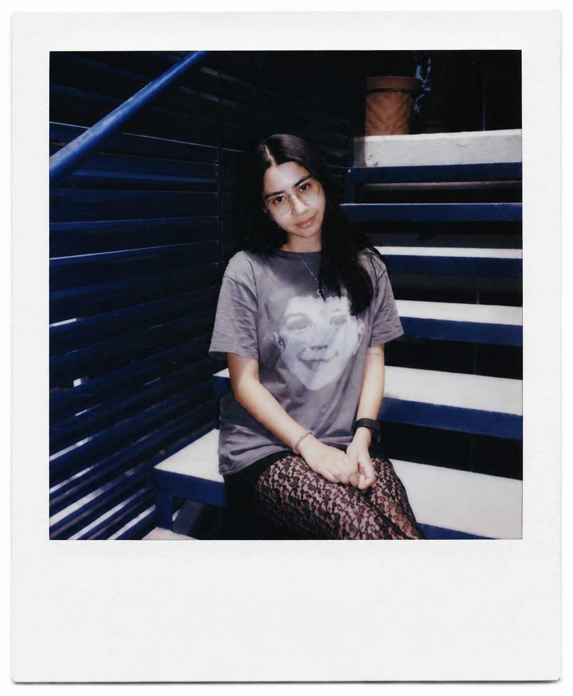
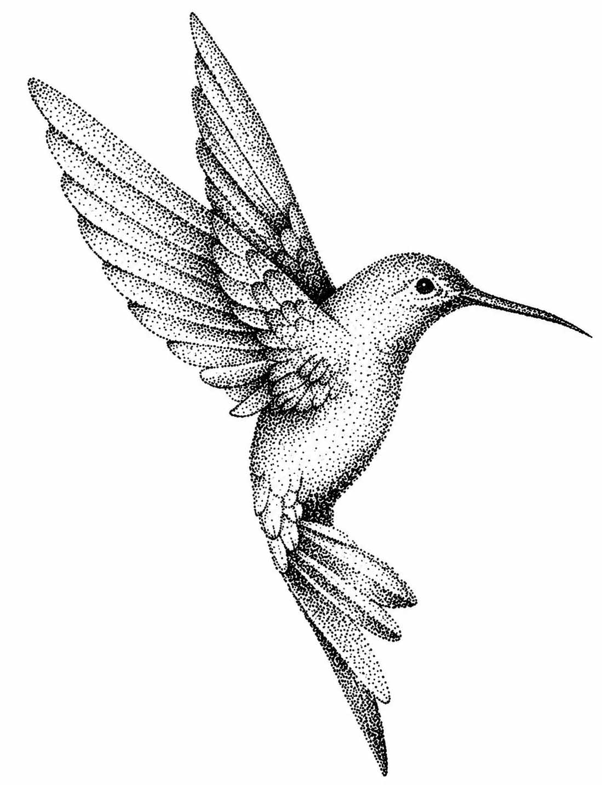
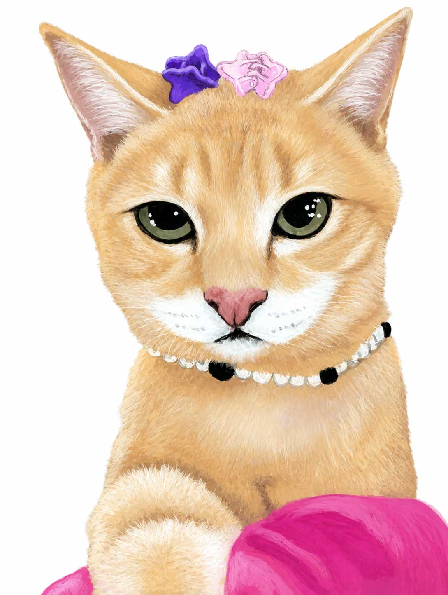

Para quienes no me conocen, me presento.
Soy ELISA ORTIZ, emprendedora detrás de HUIT.ZIIL y diseñadora en formación.
Amo la naturaleza, los animales, la ilustración y la fotografía, y encuentro en el arte la forma perfecta para expresar todo esto. Me encanta crear y estoy lista para hacer tu pedido personalizado con mucho cariño.


¿POR QUE HUIT.ZIIL?
La palabra Huitzil viene del náhuatl, la lengua de la cultura mexica, y significa colibrí, en la cultura, el
colibrí simboliza energía, valentía y también es considerado un puente entre el mundo terrenal y el
espiritual, cargado de mensajes y protección.
Me encantan las aves y para mí el colibrí es una de las más impresionantes, tanto por su belleza como por su
agilidad, lo relaciono con la idea de un mensajero espiritual, que trae buena suerte y conecta con los seres
queridos que han partido.
¿COMO ES QUE ESTE EMPRENDIMIENTO ES GRACIAS A UNA LINDA GATITA?
Les contare como en el 2022 inicio HUIT.ZIIL
Esto comenzó gracias a una petición muy especial...
y a una gatita llamada Tita
Fue gracias a que una querida tía me preguntó si podía hacer una funda pintada de su querida Tita, me encantó
la idea y sin dudarlo dije que sí.
Después, me preocupé un poco porque la verdad no tenía ni idea de cómo hacerlo: no sabia de costos, de cómo
cobrar, ni cómo vender... pero investigué un poco y decidi invertir en este sueño.
Desde entonces, realizo con mucho gusto y cariño cada pedido, y me encanta poder generar un ingreso haciendo
algo que realmente disfruto.
He tenido altibajos, pero cada experiencia me ha ayudado a crecer y valorar mi trabajo
